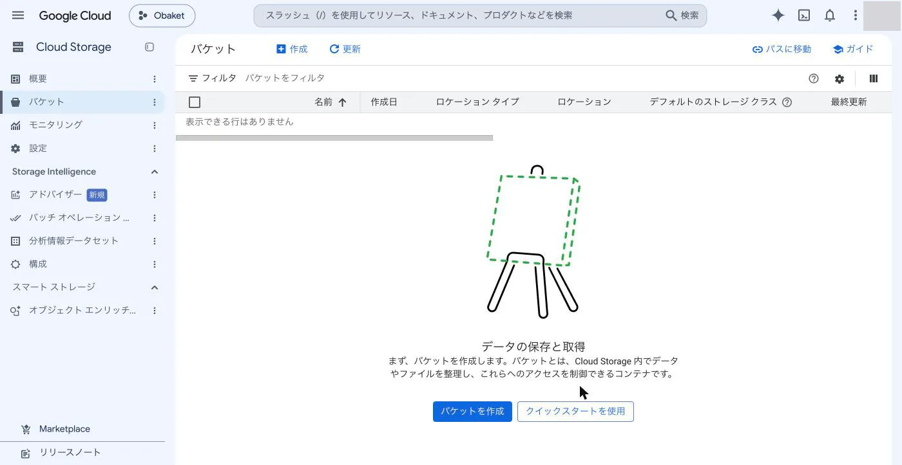
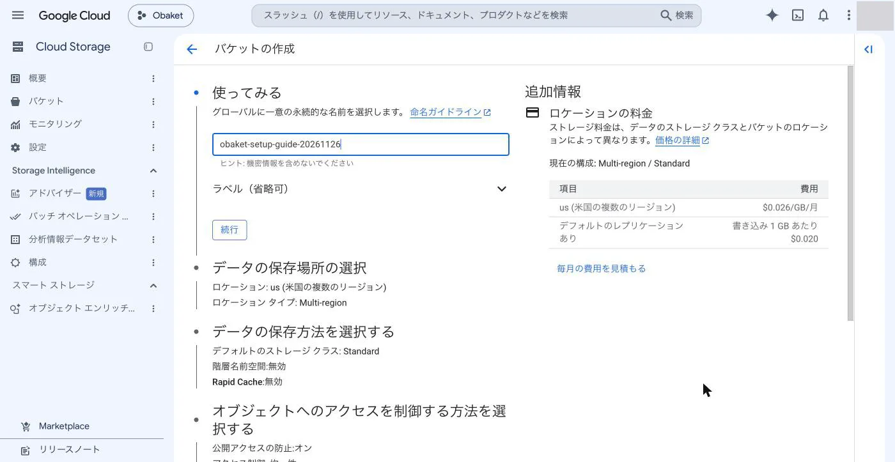
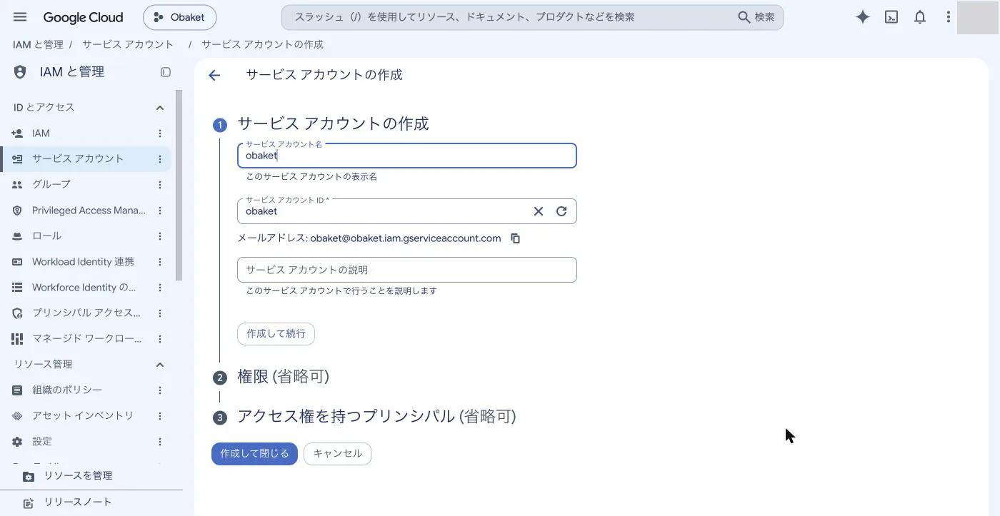
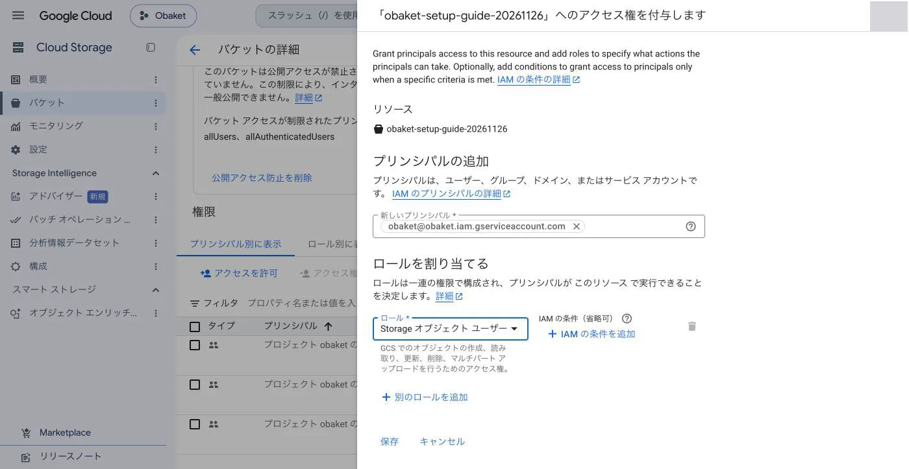
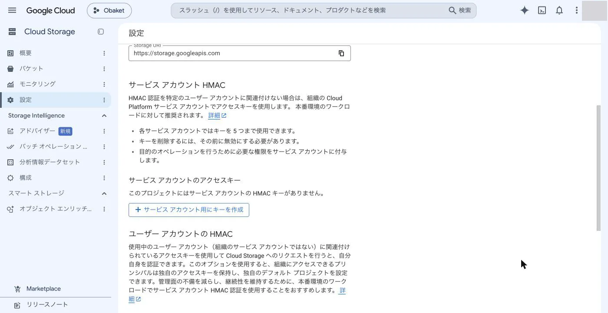
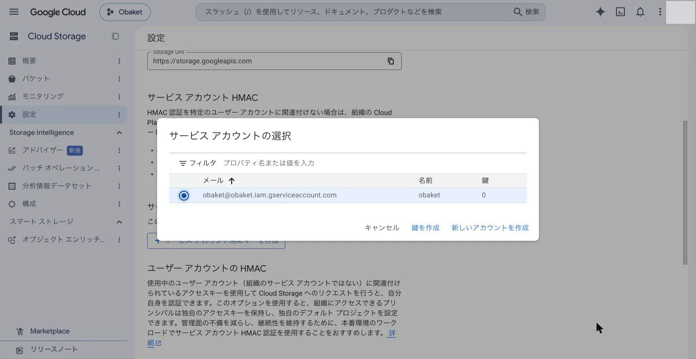
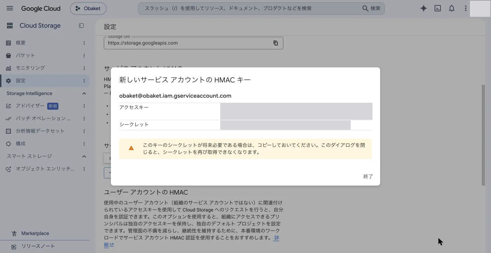
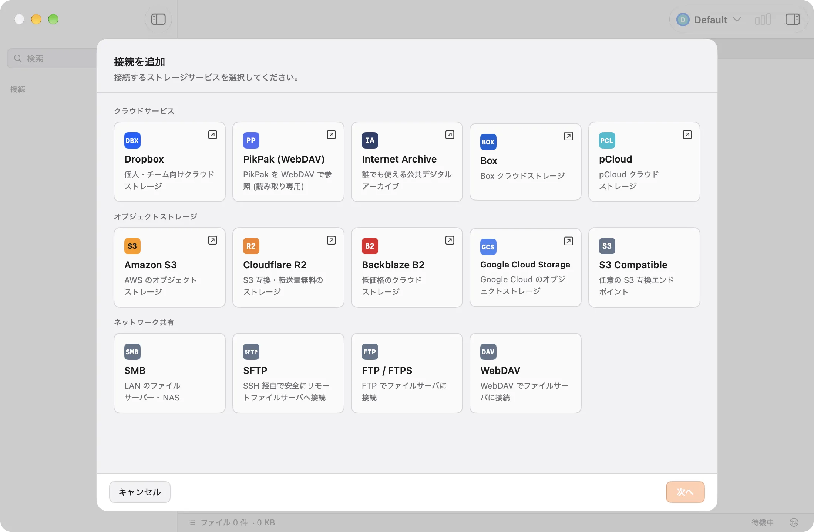
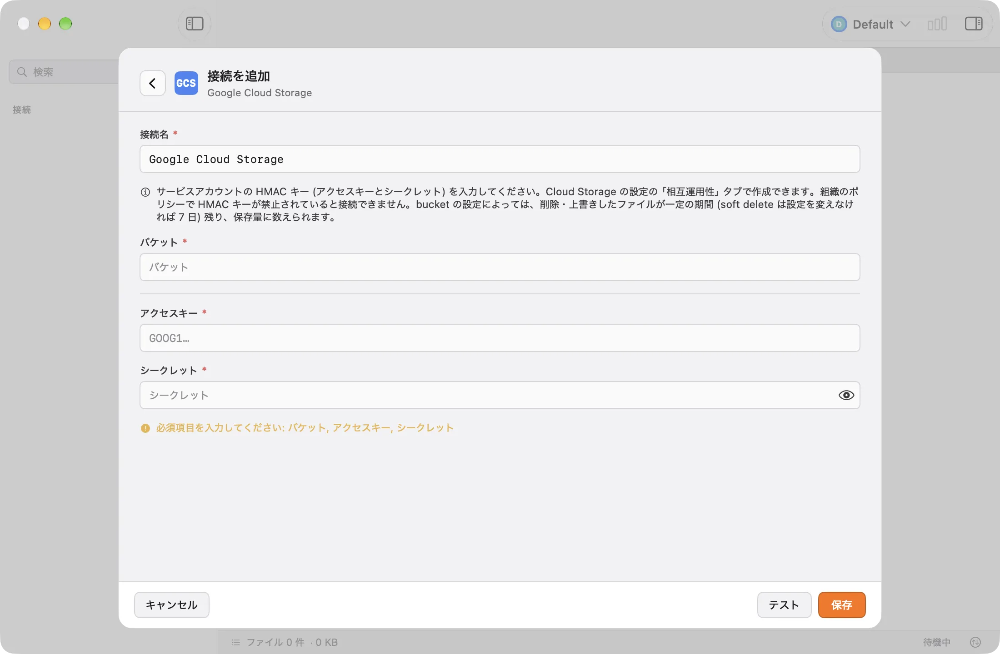
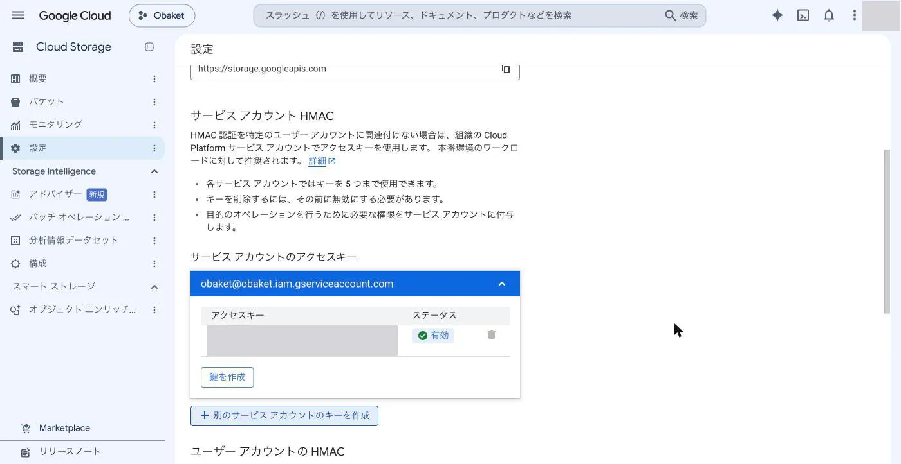

最終更新日: 2026 年 11 月 26 日
Obaket は、クラウドストレージのファイルを扱う macOS のアプリです。Google Cloud Storage の bucket を接続すると、ほかのクラウドストレージと同じ窓で bucket の中を扱えます。ファイルとフォルダの閲覧、サムネイルでのプレビュー、アップロードとダウンロード、名前の変更・移動・コピー・削除ができます。
Obaket は、1 つの bucket に HMAC キー (アクセスキー と シークレット) で接続します。このページでは、Google Cloud の console で bucket・サービスアカウント・HMAC キーを作り、Obaket に入力するまでを説明します。bucket と HMAC キーを既に持っているなら、Obaket で接続する へ進んでください。
ボタンやメニューの名前は、Google Cloud の console を日本語で表示したときのものです。画像のアカウントのアイコンとキーの値は伏せてあります。
既にある bucket を使うなら、この手順は飛ばしてください。

-)・アンダースコア (_)・ピリオド (.) で 3〜63 字にし、先頭と末尾は英字か数字にします (ピリオドを含めるともっと長くできます)。規則の全体は Google の Bucket names にあります。

設定の説明は Google の Create buckets にあります。
サービスアカウントは、人ではなくアプリが使うアカウントです。Obaket はこのアカウントの権限で動くので、Obaket が触れる範囲を 1 つの bucket に限れます。
obaket)。メールアドレス に出るアドレスを手順 3 で使います。

Google の Create service accounts も参照してください。
.iam.gserviceaccount.com で終わるもの) を入れます。
Storage オブジェクト ユーザー (Storage Object User) を付けると、そのアカウントはオブジェクトの一覧・読み出し・作成・置き換え・削除と、マルチパートアップロードができます。アクセスと保持の設定の変更が増えるだけの Storage Object Admin は要りません。Google の Use IAM permissions と IAM roles for Cloud Storage を参照してください。


GOOG1 で始まる) と シークレット を控え、終了 を押します。シークレットはこの画面を閉じると二度と表示されません。なくしたら新しいキーを作ってください。

作ったキーが使えるようになるまで最大 1 分ほどかかります。Google の Manage HMAC keys for service accounts を参照してください。
JSON のキーファイルではなく HMAC キーを使ってください。サービスアカウントのページの「Keys」で作る JSON のキーファイルは別の種類のキーで、Obaket はまだ受け付けません。シークレットはチャット・issue・スクリーンショットに載せないでください。

storage.googleapis.com です。

ファイルは Mac と Google Cloud の間だけでやりとりします。Obaket は Cloud Storage と直接通信し、独自のサーバーを持ちません。シークレットは Mac の macOS キーチェーンに保存します。詳しくはプライバシーポリシーを参照してください。
新しい bucket は、設定を変えなければ削除・置き換えた object を 7 日間残します (soft delete)。Object Versioning を有効にした bucket は古いバージョンを残します。残ったものにも Google Cloud の料金がかかります。Obaket はこれらを消さないので、要らなければ console で bucket の設定を変えてください。
bucket に保持ポリシーがある、または object に hold が付いていると、保持期間が過ぎるか hold が外れるまで Google Cloud は削除を断ります。Obaket は権限のエラーとして表示します。
組織が constraints/storage.restrictAuthTypes で HMAC キーを禁止していると、キーを作れず、既にあるキーも使えなくなります。Google Cloud の管理者に相談してください (Organization policy constraints for Cloud Storage)。
5 GiB を超えるファイルの移動・名前の変更は、Google の側で 1 回のコピーとして行います。Google Cloud は 2.5 GiB を超えるコピーが 30 秒を超えると止めるので、大きいファイルの移動は失敗することがあります。移動が失敗したときは、元のファイルがそのまま残ります。

1 つのサービスアカウントで使えるキーの数には上限があります (console には 5 つまでと出ます)。
GOOG1 で始まります)、JSON のキーファイルの値ではないかを確かめてください。サイドバーで接続を右クリックして削除を選びます。Mac に保存したシークレットが消えます。HMAC キー自体は Google Cloud で有効なままなので、要らなければ console で無効にしてから削除してください。
support@jiikko.com へのメールか、GitHub でお知らせください。
Obaket は独立したアプリで、Google LLC とは提携・承認・出資の関係にありません。Google Cloud と Google Cloud Storage は Google LLC の商標です。
← Obaket に戻る